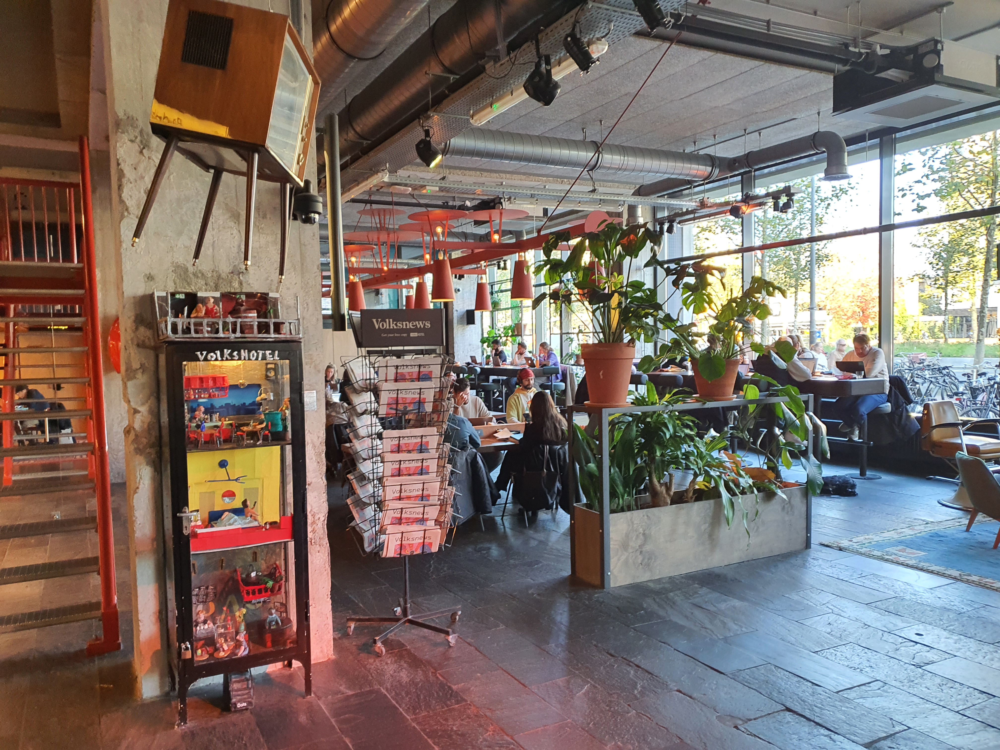

sociale waarden
sociale waarden
sociale waarden
sociale waarden
In het Volkshotel, staan sociale waarden centraal. ze zetten zich in voor inclusiviteit, duurzaamheid en het ondersteunen van lokale initiatieven. Het hotel is meer dan alleen een plek om te verblijven; het is een ruimte die verbindingen creëert, viert en bijdraagt aan een sociaal verantwoorde toekomst.
In het restaurant en gedeelde eetruimtes kunnen gasten genieten van maaltijden in een gezellige, informele sfeer. Of je nu alleen reist of met anderen, hier kun je samen eten, nieuwe mensen ontmoeten en genieten van lokale, duurzame gerechten die de diversiteit van Amsterdam weerspiegelen. Eten is voor ons een manier om verbinding te maken en de community te versterken.
Het hotel is ook een inspirerende omgeving om te werken en te leren. Veel gasten kiezen het hotel als een rustige en creatieve ruimte om productief te zijn. Met flexibele werkplekken, snelle wifi en een dynamische sfeer worden zowel professionals als studenten aangetrokken om hier te komen werken, samen te brainstormen of nieuwe vaardigheden te ontwikkelen. Het is de ideale plek om te groeien, in een omgeving die samenwerking en innovatie stimuleert.